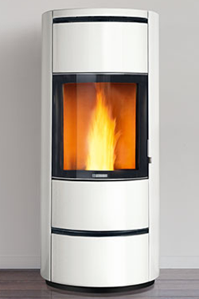
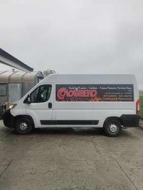
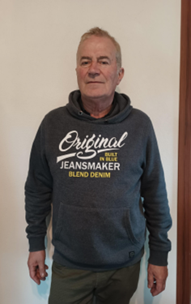

Benvenuti nel sito di Colombero Stufe, siamo una ditta che vanta di un'esperienza più che trentennale nel campo del riscaldamento e un'attività giunta alla terza generazione! Possiamo garantire esperienza e competenza per suggerire la soluzione ottimale ai problemi di riscaldamento principale o integrativo. Abbiamo la sede a Cuneo dove potrete vedere stufe e caminetti di tutti i tipi perfetti per scaldarvi nei freddi inverni.
1° VENDITA STUFE CAMINI E ACCESSORI

Nel nostro negozio potete visionare stufe, caminetti e termostufe con la consulenza di personale qualificato.
2° TRASPORTO E INSTALLAZIONE

La nostra ditta provvede oltre che alla vendita anche all'installazione dando la possibilità di accedere ad agevolazioni fiscali.
3° MANUTENZIONE, PULIZIA, RISOLUZIONE PROBLEMI E RICAMBI

La nostra ditta dispone anche di un'assistenza clienti per chi ha dei problemi con dei nostri prodotti, in caso di necessità verremo a vedere il problema di persona e risolverlo in un batter d'occhio!
La principale ditta che trattiamo è Piazzetta, che ci fornisce stufe e caminetti a legna, a pellet, ibride e a gas, di ultima generazione con dettagli artigianali molto interessanti ed eleganti adatti anche alla modernità della nuova generazione. In più la ditta piazzetta detiene il brevetto del ventilatore multifuoco system con cui il calore viene immesso nell'ambiente dal basso consentendo un calore uniforme in tutto l'ambiente.
La ditta Superior fa parte del gruppo Piazzetta con stufe a legna e a pellet catalogate 5 stelle con qualità ugualmente alta, ma a prezzi leggermente ridotti.
La ditta Lincar oltre a stufe a legno e a pellet produce vari modelli di cucine a legna i classici "Putagè".
La ditta Cadel produce cucine a legna che possono essere anche inserite tra i mobili.
La ditta Nordica ha una gamma pressochè infinita di prodotti adatta per accontentare tutte le esigenze. Ma soprattutto ha la particolarità di fornirci prodotti rustici ed eleganti.